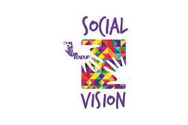
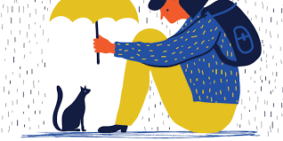
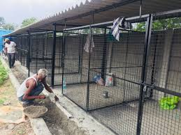
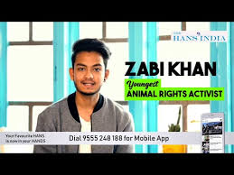

THE BASIC AIM OF THIS CAMPAIGN IS TO SPREAD AS MUCH AWARENESS AS POSSIBLE TO ALL THE PEOPLE SO THAT NO ANIMAL IS IGNORED OR LEFT UNNOTICED WHO NEEDS TO BE RESCUED. ANIMALS ARE A PART OF THE SOCIETY AND SHOULD BE TREATED AS OUR FAMILY MEMBERS . THERE'S NOTHING MORE PEACEFUL THAN LOVING A DOG, PIGEON OR ANY OTHER ANIMAL . THEY ARE JUST LIKE A RIVER FULL OF LOVE AND LOYALYITY WHICH NEVER DROWNS YOU, IF YOU FALL IN IT . THERE'S A SPEACIAL MESSAGE FOR ALL THE UNIVERSITIES WHICH IS MENTIONED IN
"WHAT'S IN IT FOR UNIVERSITIES"
